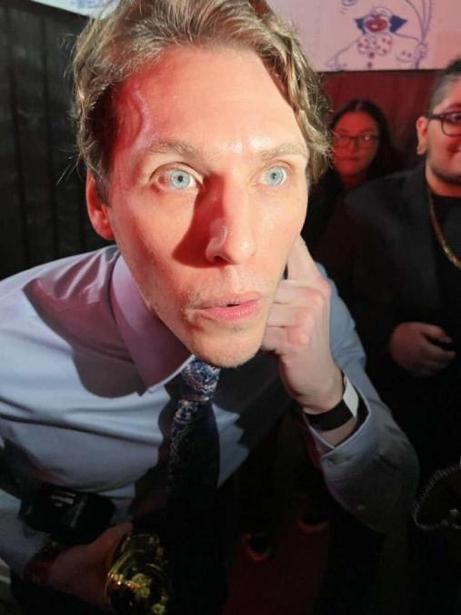
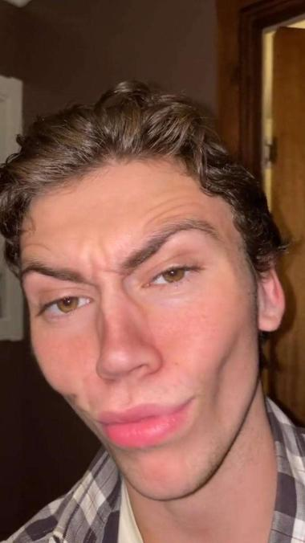
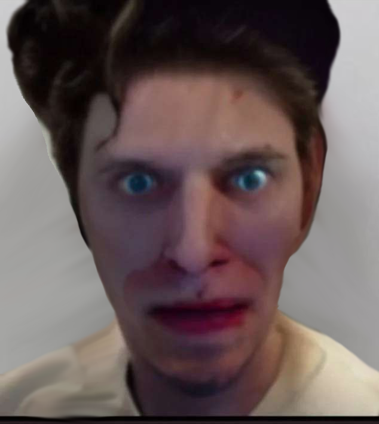

This is where we discuss the baddest crook in New Jersey -- Tony Soprano.
Mr. Dixon

Mr. Dixon has maintained steady relations with Mr. Soprano for about 3 years, now. He has defended him countless times,
and only failed to get Tony relieved of his charges once, in a case where Tony was guilty of torrenting 10 games illegaly.
It is worth noting that Mr. Dixon has a small addiction to cocaine.
Marco

Marco, AKA "Mmm milky marky" as us in the community like to call him, is the gang's Gabagool dealer, among other things. He's a first generation Sicilian immigrant
whose family has a long line of notable chefs. Upon tasting Marco's gabagool for the first time, Tony has been quoted as saying in his thick and distinct
east coast accent, "Made me buss a nut".
Optimus Prime

Optimus Prime is Mr. Dixon's brother and Tony's go-to henchman. He's tasked with any petty crime that needs to be done; pickpocketing,
stealing tomato sauce from 7-eleven, vandalism, and he often jaywalks. His latest arrest was outside of a Starbucks
where he had thrown his hot coffee into a barista's face. Above is his mugshot from the arrest.